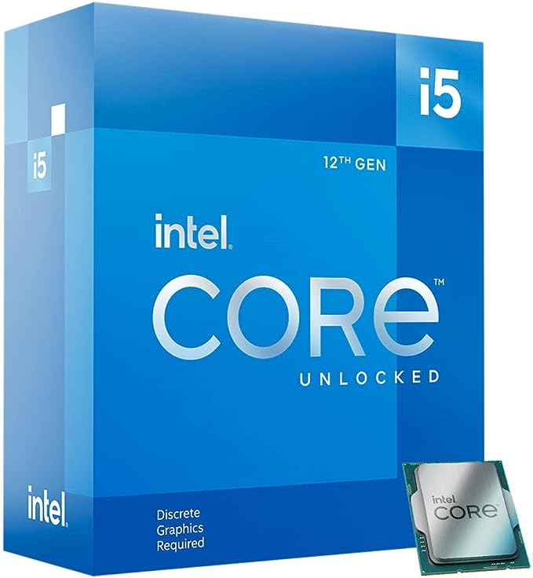

AMD's Ryzen for the everygamer
$138
Intel Core i5-12600KF Desktop Processor 10 (6P+4E) Cores up to 4.9 GHz Unlocked LGA1700 600 Series Chipset 125W
You Can Trust Our Reviews
Since 1982, PCMag has tested and rated thousands of products to help you make better buying decisions. Read our editorial mission & see how we test.
Mentions of "low-power," in this case, are relative to the 105W and 170W used on the X chips, meaning the non-X CPUs are 65W. For consumers who want traditional desktop processing power without also paying for special CPU cooling capacity, the non-X versions are a welcome option. As with the Ryzen 9 7900 and AMD Ryzen 7 7700, limiting the maximum power draw also limits the maximum sustainable clock rates. The Ryzen 5 7600 has a base clock of 3.8GHz and a boost clock of 5.1GHz, compared with the 7600X, at 4.7GHz and 5.3GHz, respectively.
Like the other non-X Ryzen chips, AMD also includes a cooler in the Ryzen 5 7600 box. Unfortunately, it's the much less capable Wraith Stealth cooler instead of the higher-quality Wraith Prism model or even the larger Wraith Spire. The Wraith Stealth has a solid aluminum fin stack in a radial configuration with a downward-facing fan.
Intel's competition for the 7600, meanwhile, comes from multiple angles. The 13th Generation Intel Core i5-13400 and 13500 have MSRPs between $221 and $242, and both operate with lower base TDPs like the Ryzen 5 7600. However, both of those are allowed to turbo up into the 150W range, and neither is multiplier-unlocked like the 7600 is. The slightly higher-end Intel Core i5-13600K is currently the least expensive 13th Gen Intel desktop CPU that's unlocked, but it's also $100 more than the 7600.